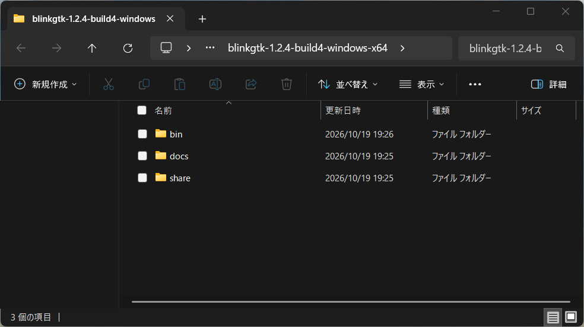
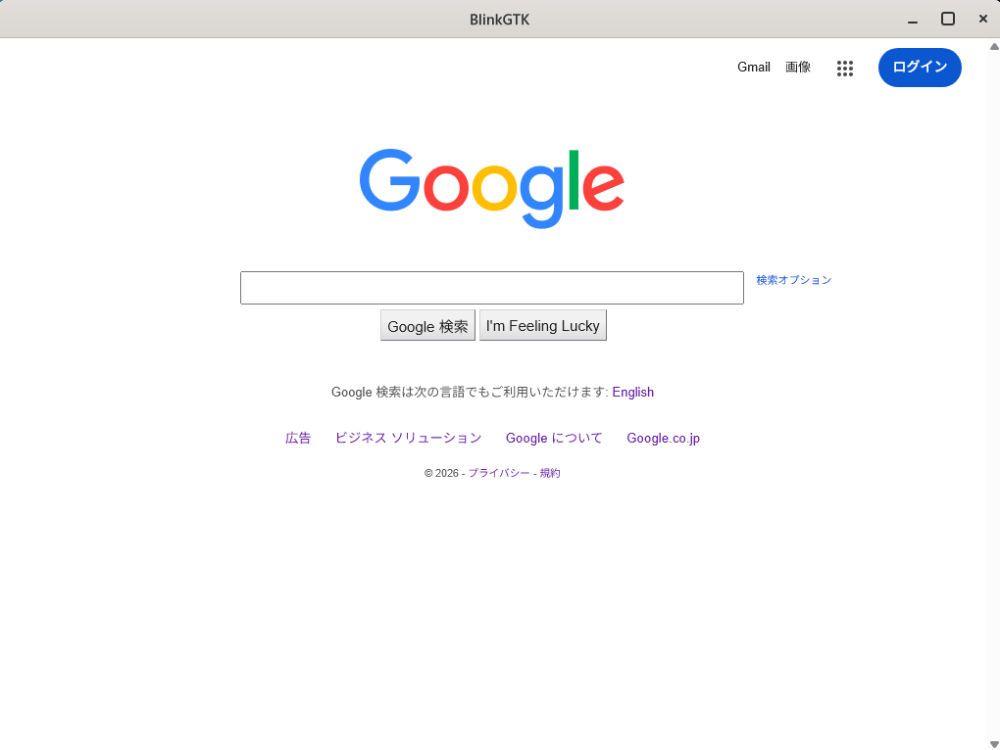
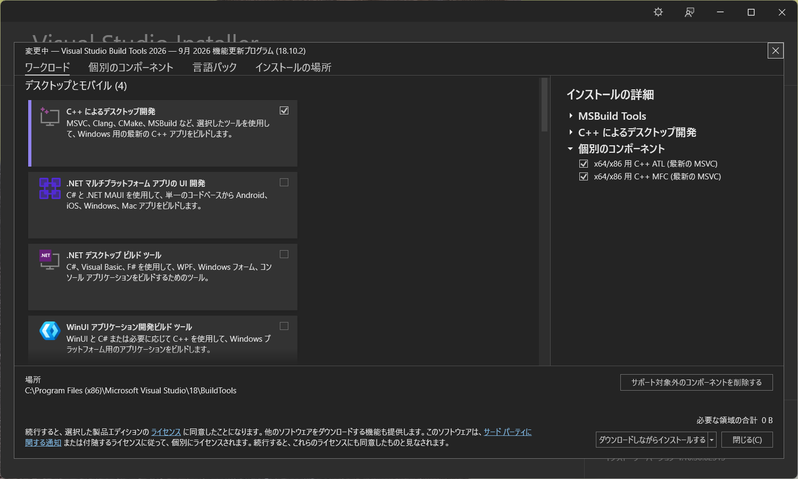

BlinkGTK for Windows は、Chromium の描画エンジン (Blink) を、GTK4
のウィジェットとして C から使えるようにしたライブラリです。
ZIP を展開して bin\blinkgtk_browser.exe
を実行すれば、すぐに動きます (管理者権限は要りません)。
Linux 版とほぼ同じ API で、同じコードを両方の OS で使えます
(違いは、下の「Linux 版との違い」にまとめました)。
この頁は v1.2.5-build1 (Chromium 156.0.8078.47) の内容です。Windows 11 Pro (build 26300) で、展開して実行するところまで 2026-10-23 に確かめました。
目次: どんな方向けか / 動かす / 動いたか確かめる / 動作条件 / 組み込む方 / 前の版から上げる方 / Linux 版との違い / 試験段階の GPU の経路 / 困ったとき
GTK4 のアプリに、Chromium
と同じ描画エンジンを組み込みたい方。 BlinkGTK は
GtkWidget として使え、C の API で操作できます。
WebView2・CEF・Electron から乗り換えを考えている方。 WebView2 は Windows 専用の部品 (Win32・WinUI・WPF など) で、Linux と共通のコードにはなりません。CEF は Linux でも動く C と C++ の API、Electron は JavaScript のアプリの枠組みです。BlinkGTK の違いは、GTK4 のウィジェットとして C から使えることです。GTK4 のアプリを C で書き、Linux と Windows で同じコードを使いたいときに選択肢になります。既存のアプリをそのまま置き換えるものではありません。
WebKitGTK から乗り換えを考えている方。 BlinkGTK は、WebKitGTK に似た名前の API を持ちます。ただし、細かい挙動までの互換は確かめていません。名前の対応は次のとおりです。
| 用途 | WebKitGTK | BlinkGTK |
|---|---|---|
| ビューの作成 | webkit_web_view_new() |
blink_web_view_new() |
| URL の読み込み | webkit_web_view_load_uri() |
blink_web_view_load_uri() |
| HTML 文字列の読み込み | webkit_web_view_load_html() |
blink_web_view_load_html() |
| 読み込みの通知 | load-changed シグナル |
同じ名前の load-changed
シグナル。ただし、値の並びが違います (下の注) |
注: load-changed
の値は、数値をそのまま流用しないでください。 BlinkGTK の
BLINK_LOAD_STARTED=0、BLINK_LOAD_COMMITTED=1、BLINK_LOAD_FINISHED=2、BLINK_LOAD_REDIRECTED=3
です (ヘッダ blink_gtk.h の
BlinkLoadEvent)。WebKitGTK は REDIRECTED が 1 で、COMMITTED
と FINISHED がそれぞれ 1
つ後ろにずれるため、数値を流用すると誤判定します。必ず
BLINK_LOAD_*
の名前で比べてください。BLINK_LOAD_REDIRECTED
は予約で、今は通知されません。
日本語の縦組みや組版を試したい方。 縦組みの実験的な調整があります (下の Linux 版との違い)。この版の Windows では、ぶら下げ (行末の句読点を行の外へ出す組版) と、1 行に収まる割注 (小さな注を 2 列に組んで行の中に入れる組版) が使えます。行をまたぐ割注は、Linux 版にもまだありません。
何をしたいかで、用意するものが変わります。
| したいこと | 用意するもの | 読むところ |
|---|---|---|
| まず動かしてみる | ZIP (portable) を展開するだけ。ビルド環境は要りません | 動かす |
| 自分のアプリに組み込む | devel ZIP と、Visual Studio Build Tools (C++ のコンパイラ)。無ければ入れ方から | 組み込む方 と、同梱の
docs\building-with-blinkgtk-ja.md の §0 |
| Chromium 本体をビルドする | 通常は要りません。 配布の ZIP を使ってください (本体のビルドは、長い時間と大きなディスクが要ります) | — |
blinkgtk-dist
の v1.2.5-build1-windows のリリース から、ZIP
を取得します。
| ファイル | 用途 |
|---|---|
blinkgtk-1.2.5-build1-windows-x64.zip |
動かす用 (portable)。まずこちら |
blinkgtk-devel-1.2.5-build1-windows-x64.zip |
組み込む用 (ヘッダとライブラリ。組み込む方) |
SHA256SUMS |
ZIP の確認用。certutil -hashfile <ZIP> SHA256
の出力と見比べられます |
portable ZIP を、任意の場所に展開します。GTK4 と VC++ ランタイムの DLL も入っているので、別に入れるものはありません。インストーラ (MSI) はまだありません。

展開すると、bin (実行ファイルと
DLL)、docs (文書)、share (GTK4 のデータ) の 3
つができます。
この配布物にはコード署名がありません。ブラウザで取得して実行すると、Microsoft Defender SmartScreen の警告が出ることがあります。警告が出たら、案内に従って実行を続けてください (一般には、警告の「詳細情報」を選ぶと「実行」が選べます。実際の画面は、この版では撮れていません)。
展開した直後の初回は、起動が遅いことがあります。 Microsoft Defender が、新しく置かれたファイル (DLL が 590 件ほどあります) を検査するためです。2 回目からは速くなります。 当方の確認では (Intel Core i5-1140G7、Defender は既定の設定、2026-10-23)、展開した直後の初回は、窓が出るまで約 11 秒かかり、2 回目以降は約 0.9 秒でした。機種や Defender の設定によって、時間は変わります。待てば起動するので、そのままお待ちください。
エクスプローラーで、展開したフォルダの bin
を開き、blinkgtk_browser.exe
をダブルクリックします。引数なしだと
https://google.com/ を開きます
(インターネットへの接続が要ります)。
開きたいページを指定するときは、コマンドプロンプト
(スタートメニューで「cmd」を検索) で、展開したフォルダの
bin へ移ってから実行します。
cd /d "C:\BlinkGTK\blinkgtk-1.2.5-build1-windows-x64\bin"
blinkgtk_browser.exe https://example.com/1 行目の C:\BlinkGTK\...
は例です。自分が展開した先の実際のパスに置き換えてください
(エクスプローラーのアドレス欄からパスをコピーできます)。<
>
を付けたまま貼ると、コマンドプロンプトが記号として解釈して失敗します。
引数に URL を渡すと、そのページを開きます。
blinkgtk_browser は、BlinkGTK
を組み込むのに必要なものだけを示す、最小のサンプルです。
ウィンドウに Web ページが表示されれば成功です。

手元のものの版は、実行ファイルが答えます。サイトや文書の数字ではなく、これを見てください。
> blinkgtk_browser.exe --version
BlinkGTK 1.2.5-build1 (Chromium 156.0.8078.47)| OS | Windows 10 (64bit) 以降。確かめたのは Windows 11 Pro (build 26200 と 26300) で、Windows 10 では確かめていません |
| CPU | x64 (32bit は対応しません) |
| 空き容量 | 約 1.4 GiB (ZIP 378 MiB + 展開後 約 1,051 MiB。展開中は両方必要) |
| GTK4 | 同梱。別に入れないでください (別の入れ方の GTK4 と混ぜると、同梱のものとリンクできないことがあります) |
| VC++ ランタイム | DLL を同梱 (再頒布可能パッケージのインストーラは不要) |
GitHub の Releases の画面は、同じ ZIP を「378 MB」と表示します。1,000,000 バイト単位で数えるツールでは 396 MB と出ます。
devel ZIP (blinkgtk-devel-1.2.5-build1-windows-x64.zip)
に、公開 API のヘッダ、インポートライブラリ、GTK4
の開発用ファイルが入っています。
ビルドに必要なもの: Visual Studio Build Tools
(2026 で確認) の「C++ によるデスクトップ開発」と、Windows
SDK。ビルド環境がまだ無い方は、同梱の
docs\building-with-blinkgtk-ja.md の §0
に、入れ方から画面付きで書いてあります。Chromium
本体のビルド環境は要りません。

Visual Studio Installer
の「変更」の画面です。アプリのビルドに使うのは、左の一覧の「C++
によるデスクトップ開発」です
(この画面ではチェックが入っています)。右の「インストールの詳細」にある「C++
によるデスクトップ開発」は、この画面では折りたたまれています。展開して、Windows
の SDK にチェックが入っているか確かめてください。
足りないものを選んだときは、インストールを最後まで進めます。入れたあとは、同梱の
docs\building-with-blinkgtk-ja.md の §0
の「動くことを確かめる」で、cl
が使えることを確かめます。この画面は、すでに導入済みの機械で撮りました。
コンパイルのオプション:
/MD /DCOMPONENT_BUILD。日本語の Windows で MSVC
を使う場合は /utf-8 も付けてください
(付けないと、ヘッダの日本語のコメントで警告 C4819 が出ます)。
手順の全体は、同梱の
docs\building-with-blinkgtk-ja.md (英語は
docs\building-with-blinkgtk-en.md) にあります。devel ZIP の
examples\
に、最小のアプリのソースと、それをビルドするバッチが入っています。
GPU の文書と環境変数の文書は、日本語のみです (英語版はまだありません)。
注意が 3 点あります。
__declspec(dllimport)
付きで宣言しているので、付かない宣言を同じ翻訳単位に並べると、clang
で警告が出ます。ヘッダだけを使ってください。g_free()
で解放してください (例:
blink_handoff_meta_serialize())。1.2.3-build2
以降の決まりです。lib\blinkgtk_sandbox.lib
をリンクし、blink_gtk_sandbox_init() を呼びます (Windows
専用です。Linux では呼べないので、両方の OS で同じコードを使うときは
#ifdef G_OS_WIN32 で囲んでください)。公開 API は 154 本です。この 154 本のうち、Linux
版との違いは 1 本だけで、Wayland 専用の
blink_web_view_attach_to_external_surface が Windows
にありません (上のサンドボックスの blink_gtk_sandbox_init()
は Windows 専用で、この数に入りません)。
そのうち実際に呼んで通ることを確かめたのは 66
本です。数え方と、確かめていない API の一覧の出し方は、同梱の
docs\api-windows-notes-ja.md の §0 にあります。
どの版から上げる場合も、手順は同じです。
blinkgtk.dll との互換は確かめていません)。版ごとの注意は、次のとおりです。
1.2.4-build4 から 1.2.5-build1 へ上げる場合:
blink_gtk_has_typesetting_feature()
は、"hanging-punctuation:allow-end" と
"warichu:single-line" の両方で TRUE を返します
(実際の動作と合うことを確かめています)。FALSE
を前提に、自前で代替の処理を入れていた場合は、見直してください。load-failed のエラー番号が整数 (int)
で渡る、読み込みが終わると is-loading が False
に戻る、set_user_agent() が load_uri() と
reload() にも反映される、拡大率
(set_zoom_level()) が倍率 (1.0 = 100%)
になる。これらは Windows
では、動作までは確かめていません。1.2.4-build2 から 1.2.4-build4 へ上げる場合:
blink_gtk_has_typesetting_feature()
で判断していた場合: 1.2.4-build2 の Windows
版は、"hanging-punctuation:allow-end" で TRUE
を返していましたが、これは誤りでした。Windows
のエンジンにはぶら下げの組版が入っておらず、動作しません。この版は、両方の名前
(allow-end と warichu:single-line) で FALSE
を返します。 CSS.supports
や計算値で判定しないでください
(組版が入っていなくても真になります)。blink_web_view_capture_screenshot_async() など): Linux
版の 1.2.4-build3 で、software
の経路では「要求した時点の内容を返す」形に変わりました。この変更は取り込んでありますが、Windows
では確かめていません。gtk-4-1.dll に差し替わっています (約 1 MB
大きくなりました)。環境変数を指定しない既定の経路は変わりません。1.2.3 以前から上げる場合: 上の共通の手順をそのまま使ってください。Windows 版は 1.2.4-build2 が最初の 1.2.4 で、Chromium が 154 から 155 に変わりました。1.2.3-build4 までは、内部の前提が崩れる場面でプロセスが異常終了することがありました。1.2.4 からは、その検査を無効にしてビルドしています。
| Linux | Windows | |
|---|---|---|
| 導入 | RPM / DEB / tarball | ZIP (MSI は今後) |
| GTK4 | OS のパッケージ | 同梱 |
| 描画結果の GTK への渡し方 | software / EGL | 既定は software。 EGL は Windows にはありません。試験段階の GPU の経路を、環境変数で選べます (下) |
blink_web_view_attach_to_external_surface |
あり | ありません (Wayland 専用) |
| ぶら下げの組版 | あり (1.2.4-build1 から) | あり (1.2.5-build1 から) |
| 割注の組版 (1 行に収まるもの) | あり (1.2.4-build3 から) | あり (1.2.5-build1 から) |
| 日本語縦組みの版面 | 実験的な調整は既定で無効 | 同じ (既定で無効) |
縦組みの実験的な調整
(段組みの中の縦組みの行を、列の格子に合わせる処理) は、Linux・Windows
とも既定で無効です。
有効にするには、実行ファイルのコマンドラインに
--enable-blink-features=CJKVerticalColumnFragmentation
を付けます (アプリが blink_gtk_init()
に引数を渡しても届きません)。
両方の OS の描画結果を並べて比べてはいないので、版面が OS
で一致する保証はありません。
環境変数 BLINKGTK_GPU_MODE は、Windows
では描画の渡し方を変えません。 egl
を指定しても、GTK への渡し方は software と同じです (Chromium
の内部の描画は変わりうるので、結果は測っていません)。GPU
を試すなら、次の BLINKGTK_WIN_GPU_PATH
を使ってください。
cmd で環境変数を指定するときは、set "NAME=値"
のように引用符で囲んでください (set NAME=値 && …
だと、値の末尾に空白が付きます)。
環境変数 BLINKGTK_WIN_GPU_PATH=vulkan
を指定したときだけ、Chromium の GPU 合成の結果を、CPU
のメモリへコピーし直さずに (従来は、GPU で描いた画面をいったん CPU
のメモリへコピーしていました)、GTK の Vulkan
のレンダラーへ渡します。Vulkan に対応した GPU
とドライバーが要ります。
set "BLINKGTK_WIN_GPU_PATH=vulkan" && blinkgtk_browser.exedocs\gpu-modes-ja.md の §1 にあります。blinkgtk_browser.exe --enable-logging
で起動し、コンソールに出るメッセージを控える (2) ZIP が壊れていないか
SHA256SUMS で確かめる (3) GTK4
を別の入れ方のものと混ぜていないか確かめる。それでも直らなければ、下の報告先へ、控えたメッセージを添えてください。docs\troubleshooting-ja.md
(英語は docs\troubleshooting-en.md) の §1〜§3
に、試すこと・症状から引く索引・報告のしかたがあります (§4
以降は、Chromium
本体をビルドする方向けです)。載っていない症状は、報告先へ。docs\00-index-ja.md (英語は
docs\00-index-en.md)。導入手順は
docs\INSTALLATION-ja.md、API の Windows 固有の注意は
docs\api-windows-notes-ja.md、環境変数は
docs\environment-variables-ja.md (日本語のみ) です。--version の出力)、Windows の build
番号、再現の手順を書いてください。| 日付 | 内容 |
|---|---|
| 2026-10-11 | 1.2.4-build2 (Chromium 155) |
| 2026-10-18 | 1.2.4-build4 に更新: Vulkan 付きの GTK の同梱、試験段階の GPU
の経路、blink_gtk_has_typesetting_feature の答えの修正 |
| 2026-10-19 | 頁の構成を改めた。動かす手順・動いたかの確かめ方・前の版から上げる方への案内を分けた |
| 2026-10-19 | 「何をしたいかで用意するものが変わる」の表と、ビルド環境の入れ方への案内を追加した |
| 2026-10-21 | 展開したフォルダ・ブラウザの窓・Visual Studio Installer の画面を追加した |
| 2026-10-21 | 実行の手順 (ダブルクリック・コマンドプロンプト)、ダウンロードの案内、Visual Studio の画面の説明、WebKitGTK からの名前の対応、前の版から上げる手順を直した |
| 2026-10-21 | load-changed
の値の並びの違い、コマンドのパスの置き換え方、Visual Studio
の画面で確かめる箇所を補った |
| 2026-10-23 | 1.2.5-build1 に更新した: Chromium 156、ぶら下げと 1 行に収まる割注の取り込み、上げる手順に 1.2.4-build4 からの項を追加 |
| 2026-10-24 | 「展開した直後の初回は起動が遅いことがあります」の説明を足した |